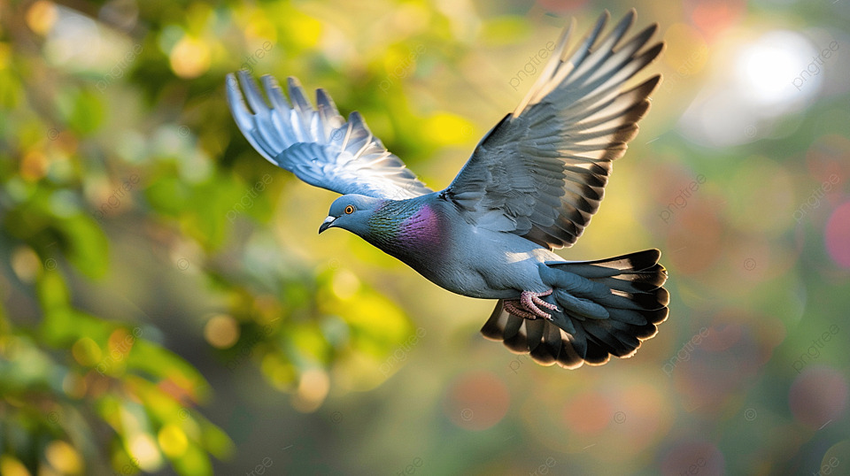

MY SKILLS

- The pigeon moves the wings 10 times in 1 second while flying.
- The pigeon's heart beats 600 times in 1 minute.
- The pigeon can identify himself by seeing his face in the mirror. The pigeon is one of only 6 species, and the only non-mammal, to have this ability
- The memory of a pigeon is very fast due to which it was used as a postman in old times.
- In the second world war, thousands of lives were saved with the help of pigeons.
- The pigeon can fly at a speed of 60 to 70 Kilometers per hour. Some pigeons can also fly at a speed of 92 Kilometers per hour.
- Pigeons can fly up to 6000 feet altitude.